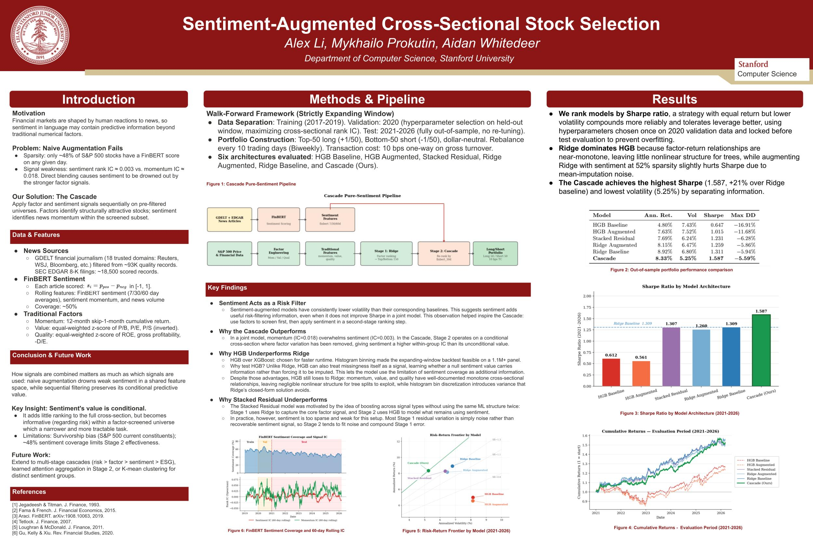
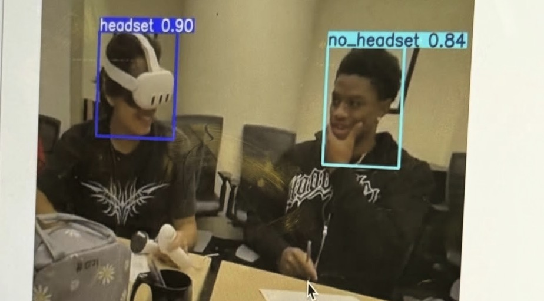
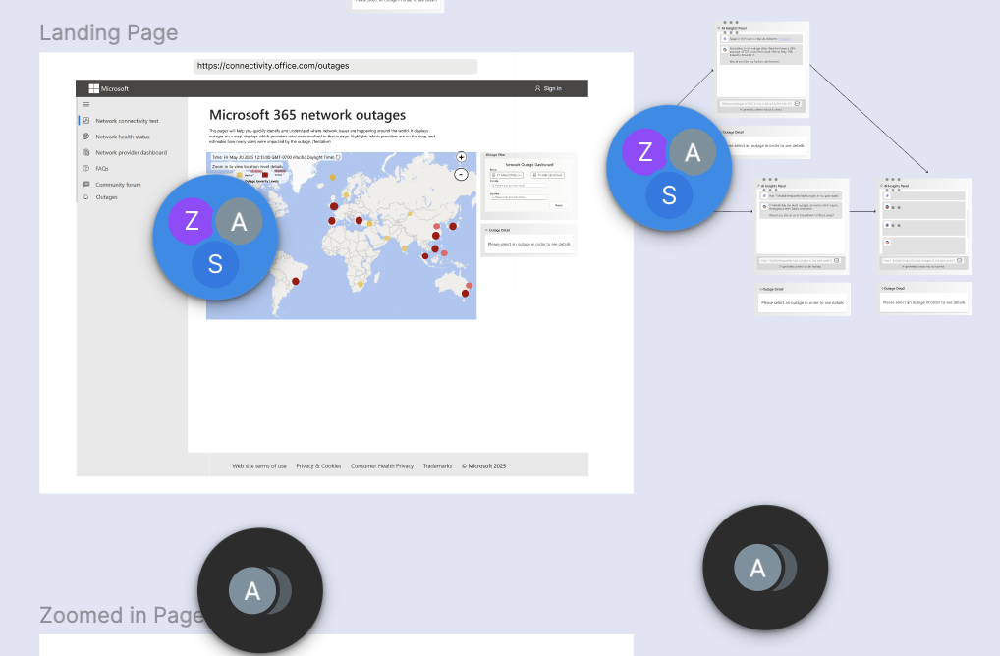

CS Undergraduate at Stanford and Researcher at Stanford Virtual Human Interaction Lab. Previously at Microsoft, building at MTS Live, incoming @ Uber. Research interests widely include Reinforcement Learning, World Models, and Virtual Spaces.
Research
Department of Computer Science · Stanford University · 2026
A complete RL pipeline (Behavioral Cloning → DAgger → PPO) built inside Roblox Studio for training AI agents to navigate obstacle courses. We instrument a custom environment with Luau, bridge game physics to a PyTorch policy loop, and evaluate generalization across differing obby layouts.

Department of Computer Science · Stanford University · 2026
We investigate whether sequentially filtering cross-sectional equity signals (first by traditional factors, then by FinBERT sentiment) outperforms joint modeling, and identify the conditions under which sentiment adds conditional predictive value within a factor-screened universe.
Experience


Featured Projects
An AI-powered DJ system with dual-deck audio engine, BPM detection, automated transitions, 3-band EQ, and bass/voice/melody isolation. Built with Next.js 16, React 19, TypeScript, and Grok/X API integration. Features a real-time 3D visualizer with Three.js/React Three Fiber, voice control with speech recognition and TTS, and AI copilot music automation.
An AI-powered SDR system with automated lead scoring and pipeline management. Built automated lead scoring, email generation, and pipeline management with REST APIs, multi-model evaluation, error handling with retries, and production-ready architecture.
An AI-powered Web3 payment system built with TypeScript/Next.js, Coinbase CDP wallets, Claude agents, and Vapi voice calls. Supports autonomous transaction flows, HTTP 402 payments, cost-based tool chaining, phone approvals, and gas-abstracted on-chain payments using the Coinbase + Anthropic SDK.
Creating framework for tribes to finetune mBERT models for endangered Native American Languages. Working with Raices Collaboration Project, mentored by Ken Attocknie. Received Dreamstarter Grant for $20,000 towards the project.